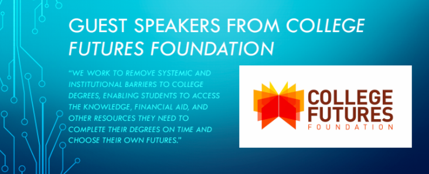

Data Scholars Pathways Seminar#
Overview#
This course is one of the three sequence seminars for students in the Data Scholars program. After finishing the Foundations Course, students take the Pathways Seminar. This course exposes Data Scholars to opportunities specific to future employment in data science. The Seminar attracts a broad range of students, such as people curious to know more about data science outside of the Foundations Course to students who know they want to major and work in the field.
Target Audience#
The Data Science Pathways Seminar is one part of the Data Scholars Program. Data Scholars take it after they have completed the Foundations Course and the Foundations Seminar for the Data Scholars Program. The course offers a deeper understanding of future employment opportunities for students interested in pursuing data science.
Goals#
The Pathways Seminar focuses on five goals.
Understand multidisciplinary career opportunities within data science.
Build an understanding of essential data science tools.
Network with cohort, speakers, mentors, etc.
Envision long-term research/internship efforts & build portfolio.
Boost confidence in a planned/flexible format.
Key Pedagogical or Curricular Strategies#
In Pathways, students learn about the opportunities of real-world data science applications through three main avenues. First, guest speakers from industry, research, and academia talk with students on what they do with data science, how they got there, and advice for undergrads. Secondly, workshops led by the instructor, D-Lab staff, and guest speakers give students valuable professional and technical skills to secure relevant internships and research positions. Finally, self-guided exploration and reflection assignments will empower students to gain desired skills and connections in data science subfields of personal interest.
The instructor encourages a welcoming course by setting group expectations. Examples of these expectations include:
“It’s okay not to know.” This guiding principle acknowledges the acceptance and importance of questions at any time.
“Growth mindset.” Specifically, in data science, abilities can be developed through dedication and hard work across time instead of a “fixed mindset,” assuming that you’re either good at data science or not.
“Everyone has something to offer in the discussion.” All of us have interacted with and been affected by “Big Data.” Everyone in the seminar brings valuable questions, opinions, and insights, regardless of their technical experience or conceptual knowledge.
“Step up/step back.” Discussion is more vibrant when you both add your unique point of view (“step-up”) AND “step back” if you’ve been sharing a lot recently (or if you’re having a bad day).
“Don’t yuck my yum.” No negative comments are welcome regarding someone else’s preferred workflow/tools/language/etc. (e.g., Mac vs. PC, Python vs. R, tabs vs. spaces). We will respect everyone’s preferences.
Key Diversity and Inclusion Practices and Strategies:#
Students are empowered to participate and process the information together throughout the semester. Students think through their understanding of employment pathways by writing start and exit reflections (1-page write-ups of your thoughts and questions on a career in data science, submitted in the first and last weeks of the semester).
Weekly workshops and speaker background assignments create a foundation for students to explore background articles, videos, and or coding assignments that will provide a foundation for speakers and workshops. Students are expected to submit two points that stood out to them from the background and two questions they have for the speaker/workshop to receive credit.
The Data Science [Exploration Assignment] is an experiential assignment designed to familiarize students with the modern data science professional landscape and build skills. Students will complete two Explorations per semester, choosing from a [list of suggested options] or proposing their own (with instructor approval).
Links to Key Documents#
Program Description#
The Pathways Seminar is one part of a three-course series to support Data Scholars’ success at Cal. This seminar meets for one-and-a-half hours, once per week. During this course, students attend talks from speakers and workshops on data science tools. The small seminar space has a foundation of valuing student support needs and enhancing their ability to network with faculty and professionals.
Best Practices for Variation Across Institutions#
It is useful to develop a network of guest speakers and community partners who can host workshops. Your focus areas for speakers and workshops will vary depending on your student population and needs. For example, at Cal in Spring 2018, a guest speaker from the College Futures Foundation came to the Pathways Seminar.
